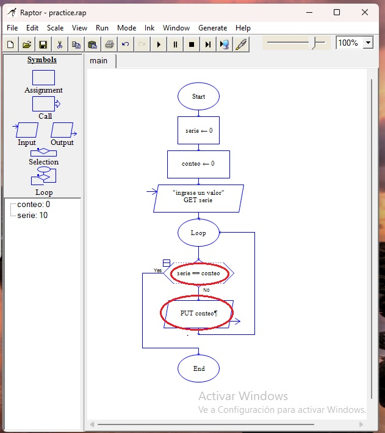
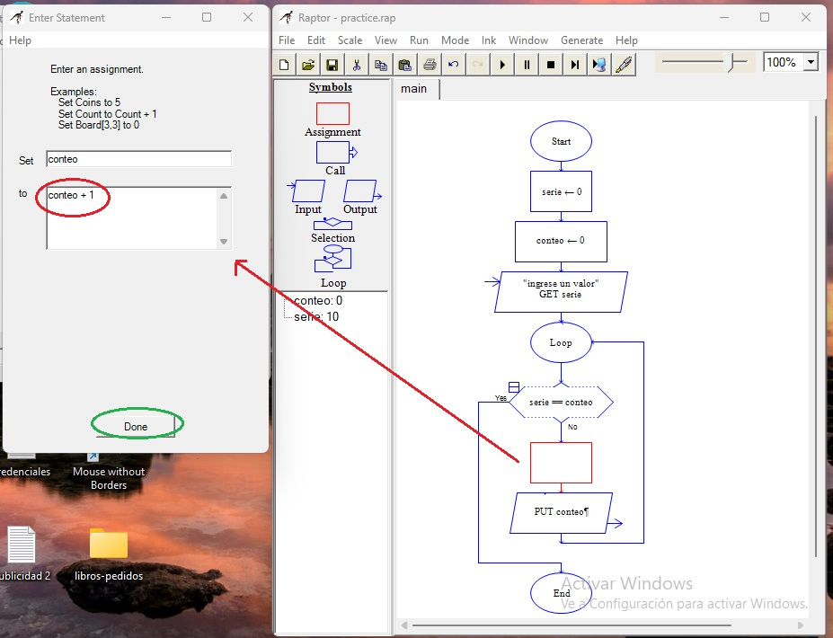
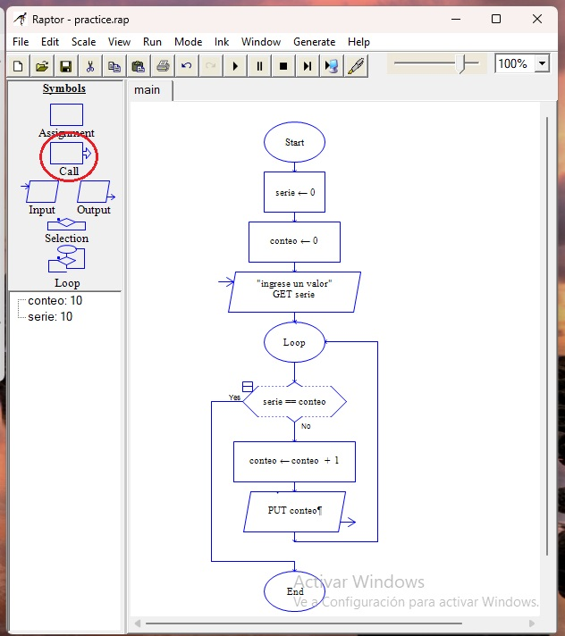
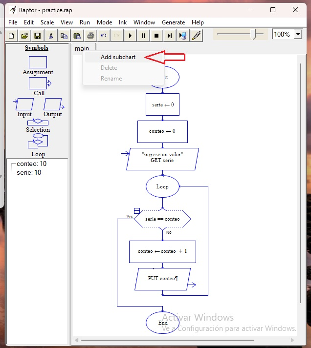

Bucles parte 2.

visto así, habiendo establecido la condición en que la variable "serie" debe ser igual a la variable "conteo" y colocado un "output" que muestre la variable conteo en la rama "no", se creará un bucle infinito (pueden probarlo). Pero no es nuestro objetivo. Así que colocamos un nuevo símbolo de "assignment" en la rama "no". Y en los campos de información vamos a escribir el nombre de la variable "conteo" y luego, en el campo siguiente "conteo + 1". De esta manera, cada vez que el bucle se encuentre con que realmente las variables no son iguales, se reiniciará el proceso pero cada vez con el valor de conteo incrementado en 1

Cuando lo ejecuten, pueden observar la secuencia de eventos paso a paso. Pero mientras, podemos ver el último símbolo de Raptor que queda por analizar: "call".

Este símbolo nos permite enlazar un programa con otro, a medida que la complejidad de nuestros programas crece, nos veremos en la necesidad de dividirlos. En el panel principal tenemos una pestaña que se llama "main". Con el botón derecho del ratón clicamos en esa pestaña y podemos crear una nueva pestaña.
